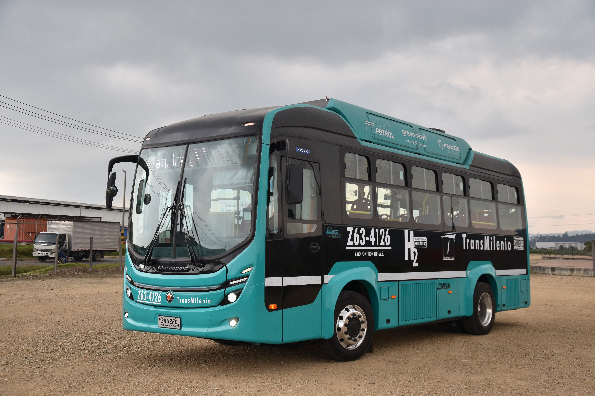
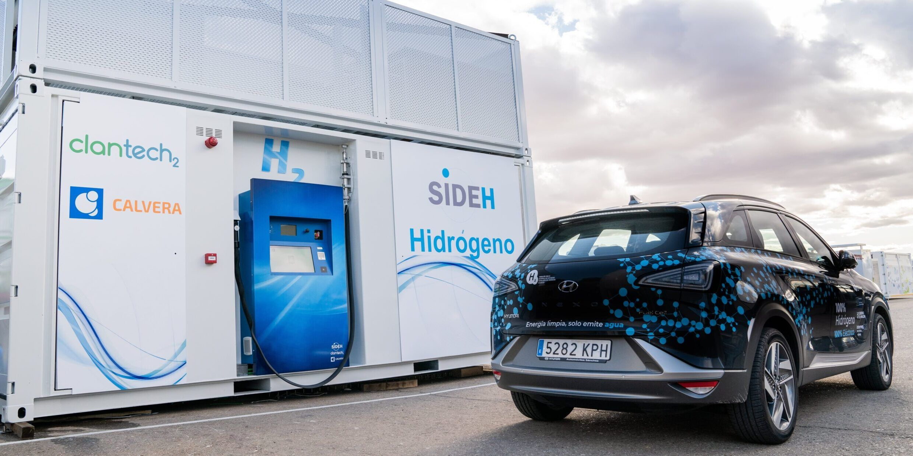
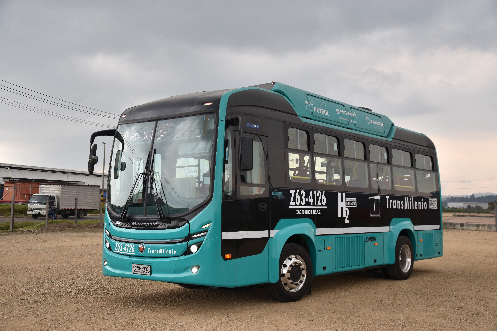
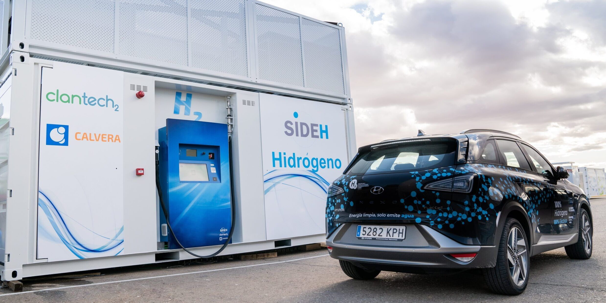

Qué es el hidrógeno verde?
El hidrógeno verde es un tipo de hidrógeno producido mediante un proceso llamado electrólisis, que separa el hidrógeno del oxígeno en el agua utilizando electricidad generada a partir de fuentes renovables, como la energía solar o eólica. A diferencia del hidrógeno convencional, que se obtiene a partir de combustibles fósiles y genera emisiones de CO₂, el hidrógeno verde es 100 % sostenible y no contamina. Su potencial es enorme, ya que puede usarse como combustible limpio en la industria, el transporte y la generación de energía, ayudando a la descarbonización del planeta. Aunque su producción aún es costosa, se espera que con el avance de las tecnologías renovables se convierta en una alternativa clave para un futuro más ecológico.
Historia del hidrógeno verde
El hidrógeno verde ha cobrado relevancia en las últimas décadas como una alternativa sostenible para la transición energética, pero su historia se remonta a descubrimientos científicos clave. Desde el siglo XVIII, cuando Henry Cavendish identificó el hidrógeno como un elemento químico, hasta el desarrollo de la electrólisis en 1800, la humanidad ha explorado formas de producir y utilizar este gas.
Click para ver gráficos a lo largo de la
historia del Hidrógeno Verde
Como se genera el hidrógeno verde
El hidrógeno verde se genera principalmente mediante un proceso llamado electrólisis del agua, en el cual se separa el hidrógeno del oxígeno utilizando electricidad proveniente de fuentes renovables, como la energía solar o eólica. Este método no produce emisiones de carbono, lo que lo convierte en una alternativa sostenible frente a otros tipos de hidrógeno.
Algunos proyectos de hidrógeno verde en la movilidad
 


